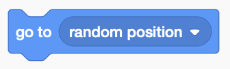
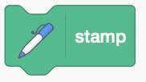
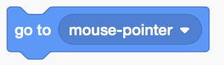
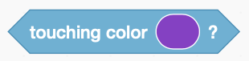
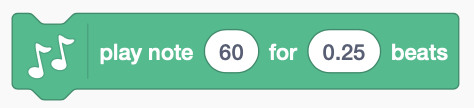

In this codelab, you'll learn how to make some musical art.
Move your mouse around the stage. Watch the star follow your mouse and listen to the music when it touches different colors.
What you'll learn
- Learn about if/else conditionals.
- Practice using x and y coordinates to control movement.
Open the starter project and click Remix.
Click the blue button in the bottom left, then click Music. Do the same for Pen.
First, we are going to create the background art. Check out the different costumes for the Shapes sprite!
Useful blocks:


Steps
- Pick a costume for the Shapes sprite, or make your own.
- Make the sprite go to a random spot.
- Make the sprite leave a stamp of itself.
- Make the sprite repeat going to a random spot and stamping itself.
- Start with a clear screen when the green flag is clicked.
Now, we are going to add and control the music.
Useful blocks:



Steps
- Make the star sprite go to the mouse when the green flag is clicked.
- Make the star sprite follow the mouse forever.
- Under a NEW hat block (when green flag clicked), add an "if" block.
- Make the "if" block say "if touching color."
- Make the star sprite play a note if it is touching green.
- Copy the if statement, then change it to make each color in your project play a different note.
- Check the colors FOREVER!